The AI Agent That Keeps the Receipts¶
A reveal — the defendable agent: a new kind of AI agent that keeps a receipt for everything it does. Not a log written afterward — a written, checkable verdict produced at the moment it reads a document, runs a playbook, reaches a conclusion, takes an action, or spends a dollar. Built, open-source, and running. Here it is.
Overnight, with no human watching, an AI agent read a stack of customer records, downgraded an account, and paid a data broker $50 for a report. On Thursday, your compliance officer walks over: What did it read? Why those documents? How sure was it? Who approved the downgrade? And what, exactly, did it spend our money on?
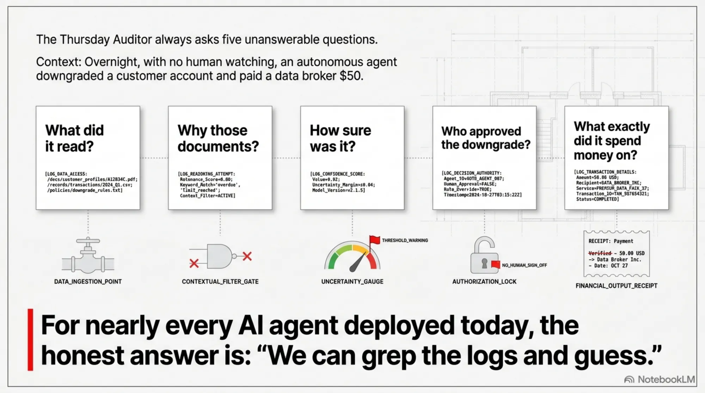
For nearly every AI agent deployed in 2026, the honest answer to all five is "we can grep the logs and guess." We made the case a few weeks ago that this is the defining gap of the agentic era — capability is abundant, defensibility is scarce — and sketched what a fix would look like.
This post is the fix, shipped. We built an agent that answers every one of those questions by construction, because it keeps the receipts — including the one for the money. It's open source, it runs today, and the fastest way to introduce it is to watch a receipt get written the moment the governance catches one in the act. So let's do that.
What "keeps the receipts" actually means¶
Reach for the everyday sense of the word. A receipt has three properties a log never guarantees:
- It's written at the moment of the transaction — not reconstructed later from memory.
- It's written by the party doing the thing — the agent commits to what it did as it does it.
- It's checkable by someone who wasn't there and doesn't trust you — a skeptic can verify it without taking your word.
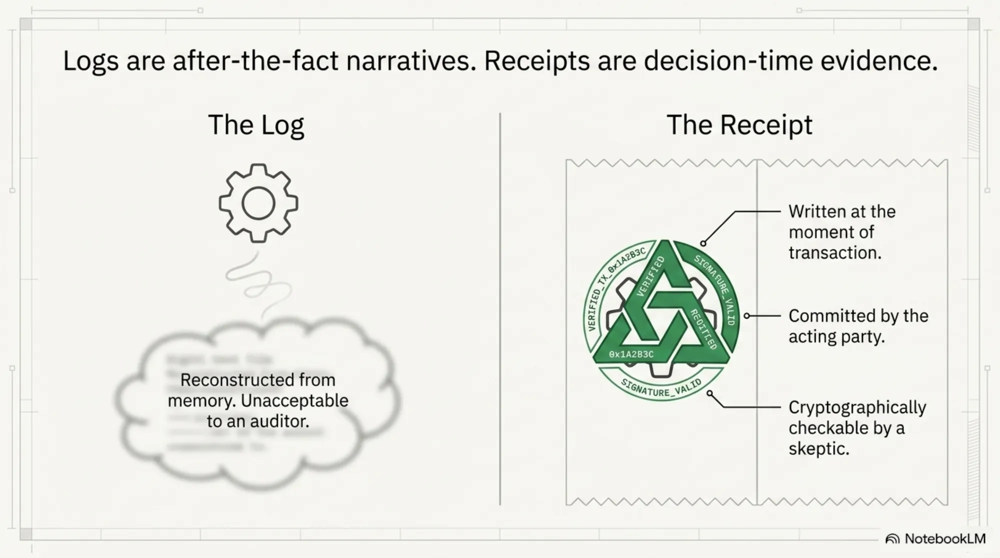
A log has none of those guarantees. It's a story told after the fact, and after-the-fact stories are exactly what a Thursday auditor can't accept. "An artifact written before execution is evidence; an artifact written after the fact is a narrative" — that line is now, almost verbatim, a design principle in an emerging IETF standard for signed agent receipts. We agree with it completely. A defendable agent is one that lives by it on every organ: each decision produces its own receipt, signed, at decision time, before the consequence lands.
Meet the defendable agent¶
Picture the agent you already run: a model in a loop that reads context, follows skills, forms an answer, calls tools, occasionally checks with a human, and moves on. In an ordinary agent, not one of those steps leaves a receipt — so none of them can be defended later to someone who wasn't watching.
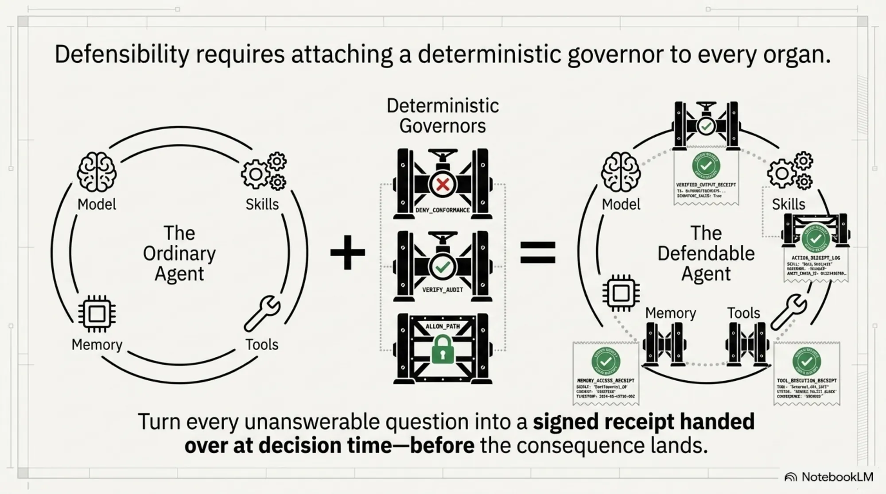
A defendable agent is that same animal with a governor on every organ, each one turning a question you currently can't answer into a receipt you can hand over:
- What it reads → a deterministic 14-gate planner (audience, currency, supersession, budget…), every skip with a written reason
- The playbook it runs → governed, signed skills; a stale, superseded, or unsigned one is refused at runtime with a reason
- What it concludes → grounding ("cite it or it didn't happen," each claim pinned to a source you actually loaded) plus a confidence gate that halts a shaky answer
- What it does → a conformance gate — "grounding for actions" — that checks each action stayed inside the running skill's declared scope, before it executes
- What it remembers → governed memory, with retention and a right-to-forget
- Who allowed it → durable, signed, named-reviewer approval tickets, not a boolean flag
- What it spends → a spend-scoped wallet: a per-task envelope of
max_spend,allowed_vendors, and currency, checked before a single coin moves - The trail → one correlation-linked chain per action, exporting itself to SOC 2 / ISO 27001 / ISO 42001 / EU AI Act
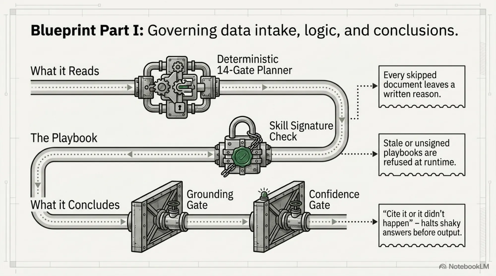
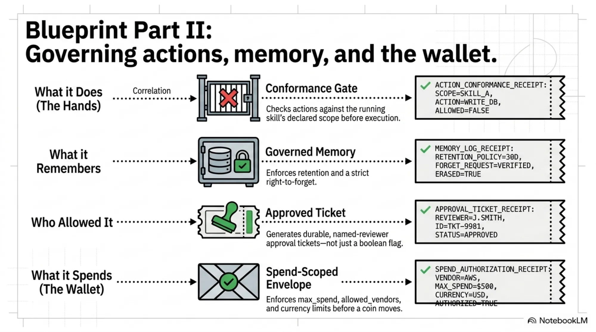
Every one of those is self-evidencing — the receipt is produced at the moment of the decision, and it's enforced at both the MCP-proxy boundary and inside the agent's own runtime loop, by one shared adjudicator. The full argument for why this shape — determinism where you can, the model only where you must, evidence at decision time — is in the explainer. Here, it's running.
As far as we can tell, this is the first open-source autonomous agent that keeps a signed receipt for every organ — what it reads, the playbook it runs, its reasoning, its actions, and its spend — in one evidence chain. If we're wrong, we genuinely want the counterexample.
Five kinds of agent, and where each goes quiet¶
We are not the first to worry about this. A whole category is forming, and most of it is good. But almost every product governs one organ and leaves the rest dark. Here is the honest field:
| Kind of agent | Real examples | What it governs | What it leaves behind | Where it goes quiet |
|---|---|---|---|---|
| The plain agent | a bare LangChain / CrewAI / Agent SDK loop | nothing | maybe a text log | every question above |
| The observed agent | LangSmith, Langfuse, Arize, Datadog | nothing — it watches | post-hoc traces + LLM-judge scores | "was it allowed?" — it scores quality after the act, not permission before it |
| The guardrailed agent | Guardrails AI, NeMo, Llama Guard, Lakera | inputs/outputs, probabilistically | a filter pass/fail | anything that isn't toxic text — a perfectly polite out-of-scope action sails straight through |
| The authorized agent | Scopebound, APort, OPA/Cedar, Descope | tool calls vs. an identity scope | a deterministic deny code | which playbook ran, whether the answer was grounded, and why — it gates the call, not the reasoning |
| The receipted agent | IETF ASQAV, Microsoft Agent Governance Toolkit, SatGate | the decision, signed | a signed receipt per action | the quality organs — per-claim grounding, confidence, playbook validity — and it typically stops at reasoning, not the whole animal |
The two right-hand categories are close cousins of this work, and the honest read is that the primitives are no longer novel: deterministic pre-action blocking exists (Scopebound, APort), signed decision-time receipts exist (IETF ASQAV, Microsoft's toolkit), spend caps and signed payment receipts are commodity (x402, AP2, Visa, Mastercard, Payman), and one adjudicator spanning proxy and loop is a known pattern. We didn't invent the receipt.
What no one else does is keep a receipt for every organ and stitch them into one chain per action — including the two receipts nobody else writes:
- Which playbook ran, and was it still valid? Everyone signs skills for supply-chain provenance; nobody refuses a stale or superseded playbook at runtime, and nobody adjudicates the live action-trace against the currently-running skill's scope. (NVIDIA is explicit that its verified skill cards do not enforce at runtime.)
- Was each claim actually grounded? Not an LLM-judge "faithfulness score" after the fact, but each claim content-hash-matched to a source the agent actually loaded, with unsupported claims surfaced as explicit gaps and sealed into the signed record. Today that exists only as academic prototypes.
And money is treated as just one more line item on the same chain — not a bolted-on payments silo. Here is the same field as a scorecard against the auditor's questions:
| The auditor asks… | Plain | Observed | Guardrailed | Authorized | Receipted | Defendable |
|---|---|---|---|---|---|---|
| What did it read, and why those? | ✗ | ◐ | ✗ | ◐ | ◐ | ✓ |
| Which playbook ran — still valid? | ✗ | ✗ | ✗ | ✗ | ✗ | ✓ |
| How sure was it (halt if shaky)? | ✗ | ◐ | ◐ | ✗ | ◐ | ✓ |
| Did the action stay in bounds, before it ran? | ✗ | ✗ | ◐ | ✓ | ◐ | ✓ |
| Was every claim grounded to a loaded source? | ✗ | ◐ | ◐ | ✗ | ✗ | ✓ |
| What did it spend — scoped and signed? | ✗ | ✗ | ✗ | ◐ | ◐ | ✓ |
| Who approved the exception — named, signed? | ✗ | ✗ | ✗ | ◐ | ◐ | ✓ |
| Provable later, without trusting the agent? | ✗ | ✗ | ✗ | ◐ | ✓ | ✓ |
| One chain across all of it? | ✗ | ✗ | ✗ | ✗ | ◐ | ✓ |
| Exports itself as compliance evidence? | ✗ | ✗ | ✗ | ✗ | ◐ | ✓ |
✓ = by construction · ◐ = partial / after-the-fact · ✗ = no
![The governance landscape leaves the hardest questions unanswered. A scorecard across Plain (LangChain), Observed (LangSmith), Guardrailed (Guardrails AI), Authorized (Scopebound), Receipted (IETF) and Defendable (KCP): every other paradigm governs one organ and leaves the rest dark, while only the defendable agent answers all of — did it read valid sources, which playbook ran, was every claim grounded, did the action stay in bounds, what did it spend, and is there one unified evidence chain. Other paradigms govern one organ and leave the rest dark; defensibility requires a whole-animal governor.](../../../../../assets/images/receipts-04-scorecard.webp)
The point isn't that the other columns are bad — several are excellent at their one job. It's that an auditor's questions span the whole animal, and only a whole-animal governor answers all of them from one chain.
Watch it run¶
Everything below is a real demo in the repo. git clone, demos/run-all.sh, 14/14 green — real kcp-agent / kcp-harness / kcp-memory, real grounding, real conformance, real signed receipts. The only thing faked anywhere is on-chain settlement (a self-facilitated x402 stub); the governance is 100% real. Output is captured verbatim.
The Runaway, Contained — a receipt for a refusal¶
An autonomous agent drives a real session through a live governance proxy, loads a skill, does two in-scope reads — then reaches for something it shouldn't:
load skill (docs-viewer) → read ops/status.md ✓ allowed
→ read ops/deploy.log ✓ allowed
→ read_file secrets/master.key
→ CONFORMANCE BLOCKED
target "secrets/master.key" is outside the skill's authorized paths [ops/]
→ pending_review ticket opened; the call never reached downstream
→ run resumes → full run reconstructed from the audit chain
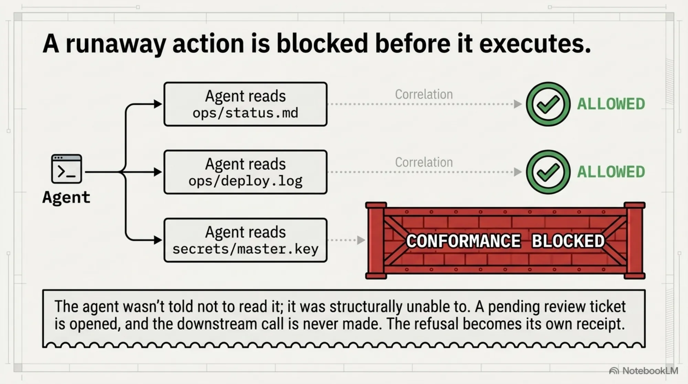
The whole idea in six lines. The agent wasn't told not to read the key — it was structurally unable to, because the skill it loaded declared what it may touch, and a deterministic gate held the out-of-scope action before it executed, opened a durable ticket, and wrote the receipt for exactly why. No human was watching. The morning after, "what did it do?" is a chain of receipts, not a shrug.
The Research Assistant — governance as an enabler¶
The counterpoint, because it kills the "governance just gets in the way" reflex. A read-only research agent loads a research-topic skill and works freely:
skill research-topic → recall prior findings (memory) → plan+load governed sources
→ 3 reads + 1 search ✓ all allowed, zero blocks
→ grounded, cited summary → remember key findings
audit chain: governed:5, blocked:0, tickets:0
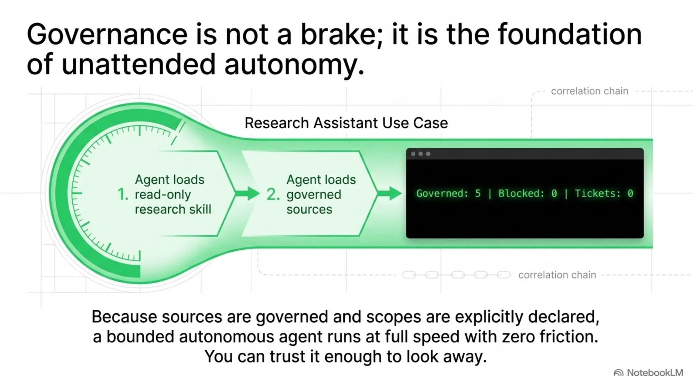
Because the skill's scope is read-only and its sources are governed, a bounded autonomous agent runs at full speed with nothing in its way — and still leaves a fully-cited, fully-auditable trail. Governance isn't a brake here; it's what lets you trust an autonomous agent enough to let it run unattended.
The Shopping Agent — a receipt for a purchase¶
The newest organ. An agent loads a skill that declares a spend envelope — max_spend, an allowed_vendors list, a currency — and buys a service through a real x402 handshake (402 Payment Required → signed X-PAYMENT → receipt):
skill data-broker → GET /premium-dataset → 402 Payment Required
requirements: { amount: 50, currency: USDC, payTo: acme-data, … }
→ conformance: purchase 50 USDC to "acme-data" ✓ within scope (vendor allowed, ≤ max_spend 500)
→ wallet authorizes (X-PAYMENT) → settled → receipt
→ purchase_settled [ed25519 signed] ✓ verifies
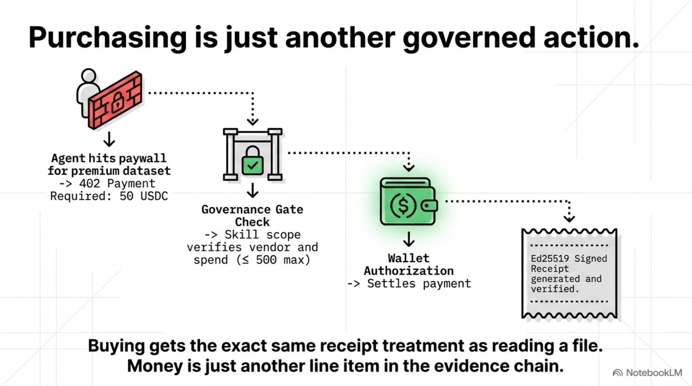
The governance runs in exactly the right place — between the 402 challenge and the signed retry. KCP inspects {amount, vendor, currency} against the skill's spend scope, and only then does the wallet sign. Buying is just another action, so it gets the same receipt as reading a file.
The Runaway Spender, Contained¶
The one that should make a CFO exhale. Same setup, but the agent tries to overspend:
purchase 900 USDC to "acme-data"
→ CONFORMANCE BLOCKED — purchase of 900 USDC to "acme-data" exceeds max_spend 500 USDC
→ pending_review ticket opened; wallet.authorize() never called
purchase 50 USDC to "shady-llc"
→ CONFORMANCE BLOCKED — vendor "shady-llc" is outside the skill's authorized vendors [acme-data, globex]
→ pending_review ticket opened; wallet never called
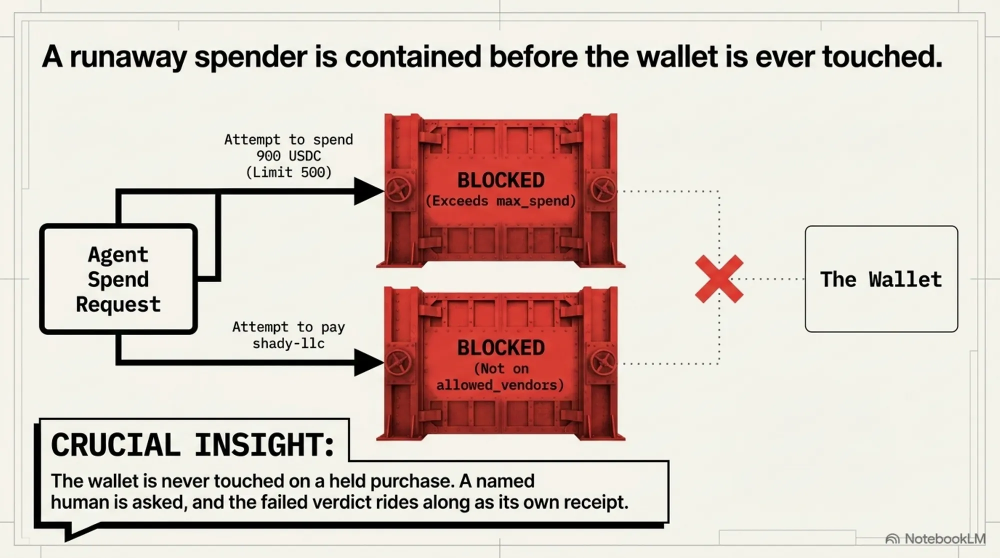
The wallet is never touched on a held purchase — the money doesn't move, a named human is asked, and the failed verdict rides along as its own receipt. An autonomous agent with a wallet is exactly as dangerous as it sounds; this is what makes it safe to hand it one.
Signed Receipts — provable spend¶
Every settled purchase produces an ed25519-signed receipt in the same evidence chain as every other verdict:
verify receipt (genuine) ✓
verify receipt (amount tampered) ✗ rejected
verify receipt (vendor tampered) ✗ rejected
decision chain reconstructed per purchase (plan → conformance → settle → receipt)
spend report exported → SOC 2 bundle · total: 425 USDC
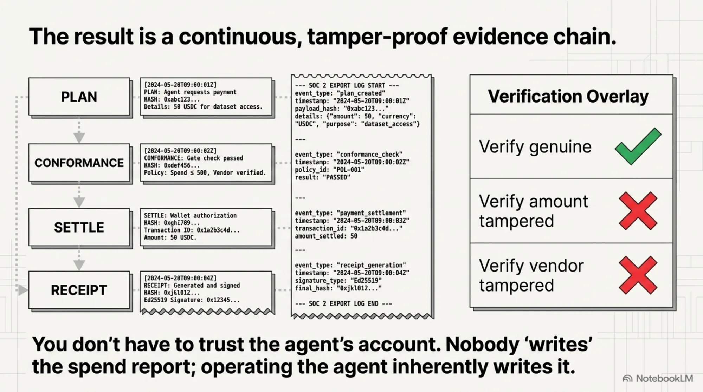
Prove it, later, to a skeptic, without trusting the agent's own account — now including the money. Nobody writes the spend report; operating the agent is writing it.
(Nine more demos cover the rest of the anatomy — the superseded playbook skipped with a reason, cite-or-it-didn't-happen grounding, the confident-fool confidence gate, the forgotten memory, the auditor's Thursday export, and a "two depths, one verdict" equivalence check. All green.)
What actually shipped, and how it holds together¶
Five open-source components, Apache-2.0, released and versioned:
- kcp-agent (0.17) — the deterministic planner: the 14 gates, grounding, the confidence gate, and now procedures/skills as governed units with
action_scope. - kcp-harness (0.9) — the MCP compliance proxy: classification, the conformance gate, durable + signed approvals, the append-only audit log, compliance export, and purchase conformance + signed receipts.
- kcp-memory (0.33) — governed episodic memory: retention, provenance, right-to-forget.
- knowledge-context-protocol — the spec: the procedural plane, the runtime-depth contract, and
action_scope.spend. - pi-kcp — the reference runtime that closes the loop and reaches inside it, sharing one adjudicator with the proxy.
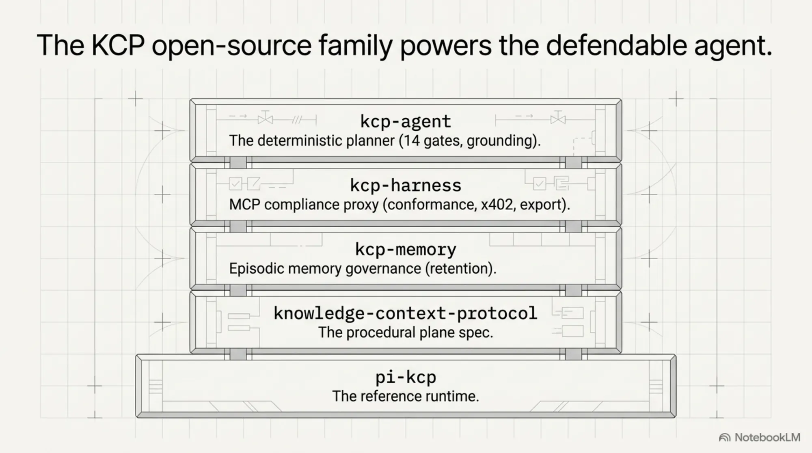
The trick that makes it coherent rather than a pile of features: one checkConformance function, two depths. The proxy governs any host at the MCP boundary; the runtime governs from inside the loop, where it can see which skill was selected and block a tool call before it runs. When we added money, a skill's action_scope just grew a fourth dimension — spend { max_spend, allowed_vendors, currency } — so the exact allowlist logic that bounds paths and tools now bounds purchases, fail-closed, composing with the planner's budget ceiling. Failed purchases route through the existing approval machinery; settled ones are signed with the existing ed25519 infrastructure. The commerce plane is almost entirely reuse — which is the whole payoff of getting the architecture right first, and the reason the money is just another line on the same chain rather than a bolt-on.
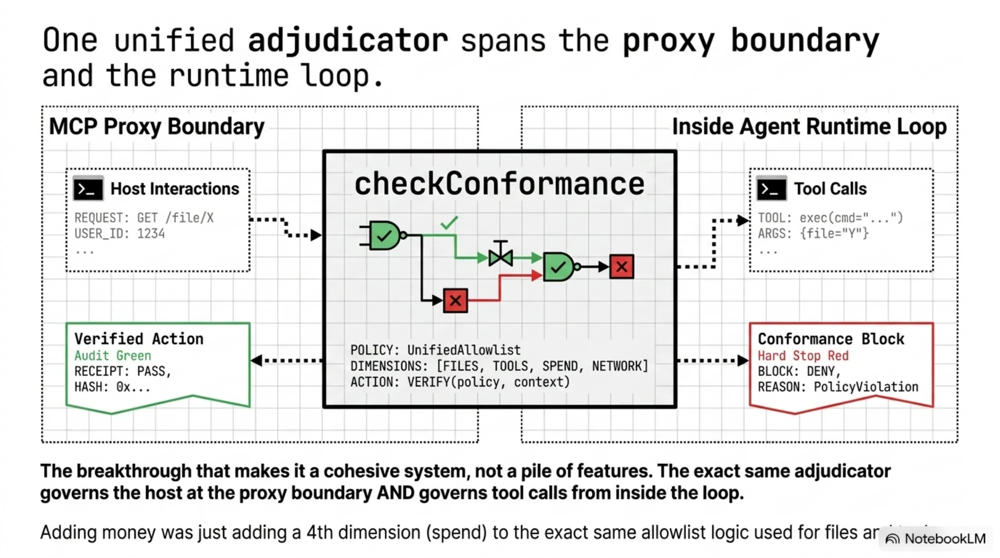
The payment rail is x402, the HTTP-402 agent-payment protocol. KCP doesn't move money; it governs the decision to. A WalletProvider seam settles — a real x402 wallet drops in behind the same interface the demos' mock uses.
Being honest about what's real¶
- Real: planner, grounding, confidence, conformance (files, tools, and spend), durable + signed approvals, memory governance, the correlation chain, compliance export, and the x402 handshake. All shipped, all tested end to end.
- Mocked in the demos: on-chain settlement only — swap one component for a testnet and you get a real tx hash, zero client/server code change.
- Not novel, and we don't claim it is: deterministic pre-action blocking, signed decision-time receipts, spend caps. Those are the shared premise of a category that includes Scopebound, APort, the IETF receipt drafts, Microsoft's toolkit, and SatGate. Our contribution is the composition — every organ receipted, in one chain, including the playbook-validity and grounding receipts nobody else writes.
- Next: a real testnet wallet; the heavier AP2 intent→cart→payment mandate model (it and x402 interoperate); and the fleet plane — one budget, one approval queue, one policy plane across many agents.
And the caveat that doesn't move: governance bounds and evidences decisions — it doesn't make the agent smarter. A signed, in-scope purchase of the wrong thing is still the wrong thing, just defensibly so.
Try it¶
git clone the KCP family, then demos/run-all.sh — fourteen demos, real tools, and you can watch an autonomous agent get stopped mid-purchase for trying to overspend. Then point the runtime at your own agent and govern it — files, tools, skills, and its wallet.
The intern is already hired. She started months ago; she reads your documents, runs your playbooks, takes real actions, and now moves your money. For the first time, when the auditor walks over on Thursday, every one of those comes with a receipt — a name, a policy, a current playbook, a grounded citation, and, for the money, a signed slip. That's the new kind of agent this is: not a smarter intern, a defensible one — the first we know of that keeps the receipts end to end, and open source so you can check every one.
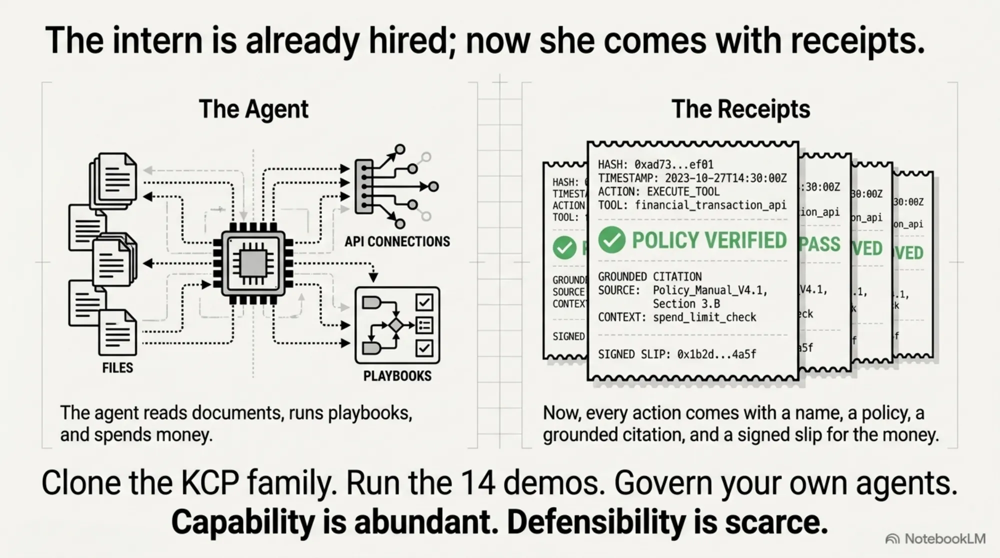
Capability is abundant. Defensibility is scarce. Now the agent keeps the receipts — all the way to the wallet.
The KCP family — knowledge-context-protocol (spec) · kcp-agent 0.17 (planner) · kcp-harness 0.9 (compliance proxy) · kcp-memory 0.33 · kcp-dashboard · plus the pi-kcp reference runtime — Apache-2.0, by eXOReaction under Cantara.